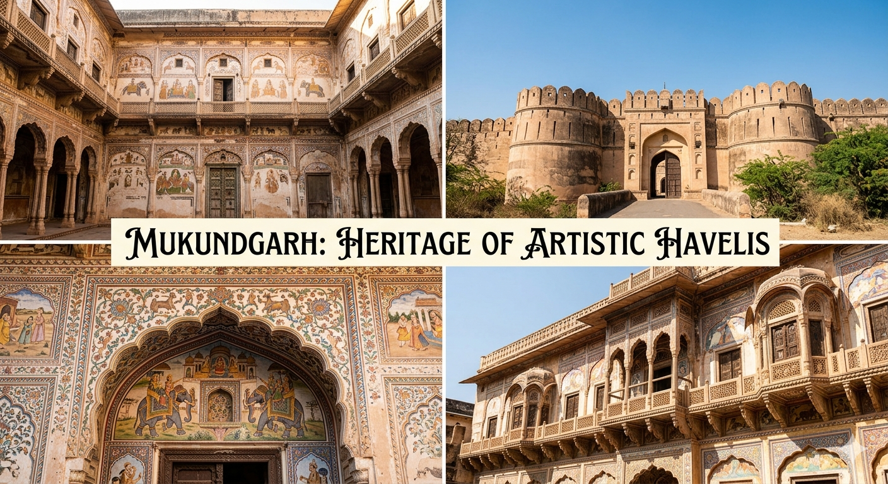

Mukundgarh – Heritage of Artistic Havelis
Introduction
Mukundgarh is a historic town located in the Shekhawati region of Rajasthan, India. It is known as the "Heritage Town of Artistic Havelis" because of its beautifully painted mansions and rich architectural heritage.
History
Mukundgarh was founded in the 18th century by Thakur Mukund Singh, a ruler of the Shekhawati region. The town developed as a trading center, and wealthy merchants built grand havelis decorated with artistic frescoes.

Famous Attractions
1. Mukundgarh Fort
Mukundgarh Fort is a major attraction and has been converted into a heritage hotel. It showcases traditional Rajput architecture and offers a glimpse into royal life.
2. Kanoria Haveli
Kanoria Haveli is one of the most famous havelis in Mukundgarh. It is known for its intricate fresco paintings and detailed artwork.
3. Ganeriwala Haveli
This haveli is another example of fine Shekhawati architecture, with beautifully painted walls and decorative interiors.
4. Local Havelis
The town is filled with numerous havelis featuring frescoes that depict mythology, historical events, and everyday life.
Architecture and Frescoes
Mukundgarh is famous for its fresco paintings, which cover the walls of havelis. These artworks include scenes from Indian epics, royal lifestyles, and even modern influences, reflecting a blend of tradition and change.
Culture and Traditions
The town reflects vibrant Rajasthani culture through its festivals, folk music, dance, and traditional handicrafts. The local people preserve their heritage with pride.

Best Time to Visit
The best time to visit Mukundgarh is between October and March when the weather is pleasant and suitable for sightseeing.
How to Reach
Mukundgarh is well connected by road. The nearest airport is Jaipur, about 160 km away. The nearest railway station is Mukundgarh, connecting it to nearby cities.
Why It Is Called the Heritage Town of Artistic Havelis
Mukundgarh is known for its beautifully designed havelis and artistic frescoes. The town's rich architectural heritage and artistic beauty give it this title.
Conclusion
Mukundgarh is a wonderful destination for exploring the art, architecture, and culture of Rajasthan. Its magnificent havelis and peaceful environment make it a unique place in the Shekhawati region.